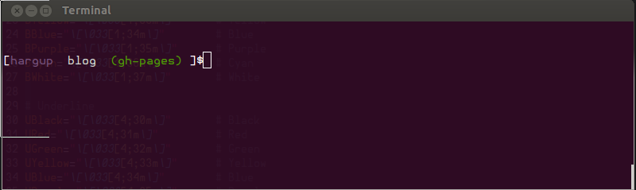

Show git branch in bash prompt
Working on the wrong branch of a git repository can be painful if not For example for this blog I need to push changes to branch gh-pages, changes
Ok so how to do it. Download this script written by a Shawn O. Pearce from https://raw.github.com/git/git/master/contrib/completion/git-prompt.sh then follow the tutorial at http://mediadoneright.com/content/ultimate-git-ps1-bash-prompt customize it for you own needs and you are done.
